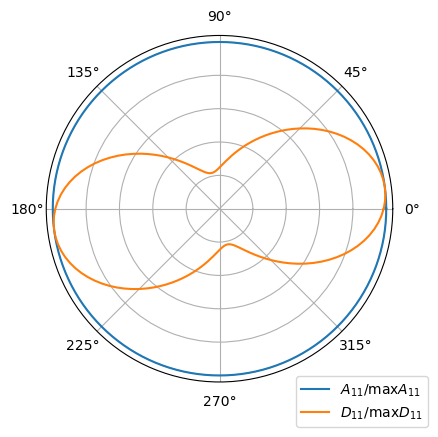

Laminated plate and ABD matrix#
This example creates a laminate with laminated_plate and checks the matrices it computes against the theory of laminated plates: the ABD matrix of the classical laminated plate theory (CLPT) and of the first-order shear deformation theory (FSDT), the corrected transverse shear stiffness Ats, the equivalent membrane properties, the mass per unit area, the matrices of the third-order shear deformation theory (TSDT) and the stiffnesses obtained from lamination parameters. Each result is
printed next to its reference value, computed here independently of composites or by an independent implementation, with the relative difference. SI units are used throughout.
The stacking sequence runs from the bottom to the top ply, see Conventions. The stiffnesses are the thickness integrals of the ply stiffnesses \(C^{(k)}\) in the laminate axes, see Laminate stiffness and plate theories:
print_table prints a result, its reference and the relative difference; for a reference equal to zero the difference is divided by a scale of the same matrix, given in the row.
[1]:
%matplotlib inline
import sys
sys.path.insert(0, '../tests') # independent implementation of Rohwer (1988)
import numpy as np
import matplotlib.pyplot as plt
from composites import laminated_plate
from composites.core import (laminate_from_LaminationParameters,
make_balanced_LP, make_orthotropic_LP,
make_symmetric_LP)
from test_transverse_shear import RohwerReference, stack_from_laminate
np.set_printoptions(precision=4)
def print_table(rows):
"""Print each result, its reference value and their relative difference
``rows`` holds ``(name, value, reference)`` or ``(name, value, reference,
scale)``; the difference is divided by ``scale``, by default the absolute
value of the reference, e.g. the largest term of the matrix when the
reference is zero.
"""
print('%-36s %14s %14s %10s' % ('quantity', 'composites', 'reference',
'rel. diff.'))
for row in rows:
name, value, ref = row[:3]
scale = row[3] if len(row) > 3 else abs(ref)
print('%-36s % 14.6e % 14.6e %10.1e' % (name, value, ref,
abs(value - ref)/scale))
A quasi-isotropic laminate#
The laminate \([0/45/-45/90]_s\) of a CFRP ply, eight plies of 0.125 mm, with the density of the plies. ABD relates \(\{N_{xx}, N_{yy}, N_{xy}, M_{xx},
M_{yy}, M_{xy}\}\) to the generalized strains \(\{\varepsilon^{(0)}_{xx},
\varepsilon^{(0)}_{yy}, \gamma^{(0)}_{xy}, \varepsilon^{(1)}_{xx},
\varepsilon^{(1)}_{yy}, \gamma^{(1)}_{xy}\}\); its blocks are lam.A, lam.B and lam.D.
[2]:
# E11, E22, nu12, G12, G13, G23 of the ply
laminaprop = (142e9, 8.7e9, 0.28, 5.1e9, 5.1e9, 3.2e9)
rho = 1600. # kg/m^3
stack = [0, 45, -45, 90, 90, -45, 45, 0] # from the bottom to the top ply
lam = laminated_plate(stack, plyt=0.125e-3, laminaprop=laminaprop, rho=rho)
h = lam.h
print('h =', h)
print('ABD =')
print(lam.ABD)
h = 0.001
ABD =
[[ 5.9947e+07 1.8214e+07 0.0000e+00 0.0000e+00 8.5265e-14 0.0000e+00]
[ 1.8214e+07 5.9947e+07 1.8626e-09 8.5265e-14 -4.5475e-13 0.0000e+00]
[ 0.0000e+00 1.8626e-09 2.0866e+07 0.0000e+00 0.0000e+00 1.7053e-13]
[ 0.0000e+00 8.5265e-14 0.0000e+00 8.3812e+00 1.2715e+00 5.2322e-01]
[ 8.5265e-14 -4.5475e-13 0.0000e+00 1.2715e+00 2.1027e+00 5.2322e-01]
[ 0.0000e+00 0.0000e+00 1.7053e-13 5.2322e-01 5.2322e-01 1.4925e+00]]
Membrane stiffness: quasi-isotropic#
The ply stiffnesses in the laminate axes are linear in \(\cos 2\theta\), \(\sin 2\theta\), \(\cos 4\theta\), \(\sin 4\theta\), with the material invariants \(u_1, \dots, u_5\) as coefficients, see Ply constitutive relations and invariants:
with the plane-stress stiffnesses \(Q_{11} = E_1/(1 - \nu_{12} \nu_{21})\), \(Q_{22} = E_2/(1 - \nu_{12} \nu_{21})\), \(Q_{12} = \nu_{12} Q_{22}\), \(Q_{66} = G_{12}\) and \(\nu_{21} = \nu_{12} E_2/E_1\). For the angles 0, 45, -45 and 90 degrees, each with the same thickness, the averages of the four trigonometric terms, the lamination parameters \(\xi_{A1}, \dots, \xi_{A4}\), are zero, and the stiffnesses of Lamination parameters reduce to
the form of the membrane stiffness of an isotropic plate. The laminate is symmetric about the mid-surface and has no offset, so the integrand \(C^{(k)} z\) is odd about \(z = 0\) and \(B = 0\). Below, the invariants are computed from the ply constants, independently of composites.
[3]:
E1, E2, nu12, G12 = laminaprop[:4]
nu21 = nu12*E2/E1
Q11 = E1/(1 - nu12*nu21)
Q22 = E2/(1 - nu12*nu21)
Q12 = nu12*Q22
Q66 = G12
u1 = (3*Q11 + 3*Q22 + 2*Q12 + 4*Q66)/8
u4 = (Q11 + Q22 + 6*Q12 - 4*Q66)/8
u5 = (u1 - u4)/2
print_table([
('A11 = h u1', lam.A11, h*u1),
('A22 = h u1', lam.A22, h*u1),
('A12 = h u4', lam.A12, h*u4),
('A66 = h u5', lam.A66, h*u5),
('A16 = 0 (scale A11)', lam.A16, 0., lam.A11),
('A26 = 0 (scale A11)', lam.A26, 0., lam.A11),
('max |Bij| = 0 (scale A11 h)', np.abs(lam.B).max(), 0., lam.A11*h),
])
quantity composites reference rel. diff.
A11 = h u1 5.994720e+07 5.994720e+07 2.5e-16
A22 = h u1 5.994720e+07 5.994720e+07 2.5e-16
A12 = h u4 1.821424e+07 1.821424e+07 0.0e+00
A66 = h u5 2.086648e+07 2.086648e+07 3.6e-16
A16 = 0 (scale A11) 0.000000e+00 0.000000e+00 0.0e+00
A26 = 0 (scale A11) 1.862645e-09 0.000000e+00 3.1e-17
max |Bij| = 0 (scale A11 h) 4.547474e-13 0.000000e+00 7.6e-18
Bending stiffness: not quasi-isotropic#
In \(D\) the trigonometric terms are weighted with \(z^2\). The +45 degree plies are farther from the mid-surface than the -45 degree plies, so the bending-twisting terms \(D_{16}\) and \(D_{26}\) are not zero and the bending stiffness depends on the direction. Rotating the stacking sequence by an angle \(\psi\), stack - psi, gives the stiffnesses in axes rotated by \(\psi\): \(A_{11}\) is the same in every direction, \(D_{11}\) is not.
[4]:
print('D16/D11 = %.4f, D26/D11 = %.4f' % (lam.D16/lam.D11, lam.D26/lam.D11))
psis = np.linspace(0, 360, 145)
A11s, D11s = [], []
for psi in psis:
rot = laminated_plate(np.array(stack) - psi, plyt=0.125e-3,
laminaprop=laminaprop)
A11s.append(rot.A11)
D11s.append(rot.D11)
A11s, D11s = np.array(A11s), np.array(D11s)
print('A11 over the directions: max/min - 1 = %.1e' % (A11s.max()/A11s.min() - 1))
print('D11 over the directions: max/min = %.3f' % (D11s.max()/D11s.min()))
fig = plt.figure(figsize=(4.5, 4.5))
ax = fig.add_subplot(projection='polar')
ax.plot(np.deg2rad(psis), A11s/A11s.max(), label='$A_{11}/\\max A_{11}$')
ax.plot(np.deg2rad(psis), D11s/D11s.max(), label='$D_{11}/\\max D_{11}$')
ax.set_yticklabels([])
ax.legend(loc='lower left', bbox_to_anchor=(0.7, -0.15))
plt.show()
D16/D11 = 0.0624, D26/D11 = 0.0624
A11 over the directions: max/min - 1 = 1.3e-15
D11 over the directions: max/min = 4.560

Equivalent properties, transverse shear and mass#
The equivalent membrane properties follow from the compliance \(a = [[A, B], [B, D]]^{-1}\): \(E_1 = 1/(h a_{11})\), \(E_2 = 1/(h a_{22})\), \(G_{12} = 1/(h a_{66})\) and \(\nu_{12} = -a_{12}/a_{11}\). Since \(B = 0\), the membrane block of \(a\) is \(A^{-1}\), and the isotropic form of \(A\) gives \(E_1 = E_2\) and \(G_{12} = E_1/(2(1 + \nu_{12}))\).
Ats is the transverse shear stiffness of the FSDT with the shear correction applied, by default with the equilibrium approach of Rohwer [1], see Shear correction. In two cylindrical bending states, \(M_{xx,x} = Q_x\), \(M_{xy,x} = Q_y\) and \(M_{yy,y} = Q_y\), \(M_{xy,y} = Q_x\), the equilibrium equations \(\tau_{xz,z} = -\sigma_{xx,x}\) and \(\tau_{yz,z} = -\sigma_{yy,y}\) give a distribution
\(\{\tau_{yz}, \tau_{xz}\} = f^{(k)}(z) \, Q\), quadratic within each ply, and the stiffness follows from the complementary energy, Rohwer’s Eq. (43):
The reference is RohwerReference, an independent NumPy implementation of these equations kept with the tests of composites, which integrates the energy, of degree 4 in \(z\), with the 3-point Gauss-Legendre rule per ply, exact for this degree. The two implementations solve the same equations, so they agree to round-off. The informative factors are the ratios to the constant-strain stiffness \(\bar{A}_{ts}\): scf_k13 = A55/Abar55 and scf_k23 = A44/Abar44. The mass per unit
area is \(I_0 = \sum_k \int \rho^{(k)} dz = \rho h\), see Mass integrals.
[5]:
Ats_ref = RohwerReference(stack_from_laminate(lam)).Ats
print('Ats =')
print(lam.Ats)
print('scf_k13 = %.4f, scf_k23 = %.4f' % (lam.scf_k13, lam.scf_k23))
print()
print_table([
('e2 = e1', lam.e2, lam.e1),
('g12 = e1/(2 (1 + nu12))', lam.g12, lam.e1/(2*(1 + lam.nu12))),
('A44, Rohwer (1988)', lam.A44, Ats_ref[0, 0]),
('A45, Rohwer (1988), scale A55', lam.A45, Ats_ref[0, 1], Ats_ref[1, 1]),
('A55, Rohwer (1988)', lam.A55, Ats_ref[1, 1]),
('intrho = rho h', lam.intrho, rho*h),
])
Ats =
[[2948931.4831 43511.7955]
[ 43511.7955 3247625.5097]]
scf_k13 = 0.7826, scf_k23 = 0.7106
quantity composites reference rel. diff.
e2 = e1 5.441302e+10 5.441302e+10 0.0e+00
g12 = e1/(2 (1 + nu12)) 2.086648e+10 2.086648e+10 0.0e+00
A44, Rohwer (1988) 2.948931e+06 2.948931e+06 4.7e-16
A45, Rohwer (1988), scale A55 4.351180e+04 4.351180e+04 2.4e-16
A55, Rohwer (1988) 3.247626e+06 3.247626e+06 7.2e-16
intrho = rho h 1.600000e+00 1.600000e+00 1.4e-16
An unsymmetric laminate: TSDT and transverse shear#
The unsymmetric laminate \([0/45/90]\), plies of 0.125 mm of a material with \(E_1 = 71\) GPa, \(E_2 = 7\) GPa, \(\nu_{12} = 0.28\) and \(G_{12} = G_{13} = G_{23} = G = 7\) GPa, has \(B \neq 0\) and, for the TSDT, the odd integral \(E \neq 0\). The uncorrected transverse shear matrices of the TSDT are
With \(G_{13} = G_{23} = G\) the transverse shear stiffness of every ply is \(C_s^{(k)} = G I\) for any angle, hence the closed forms \(\bar{A}_{ts} = G h I\), \(D_{ts} = G h^3/12 \, I\) and \(F_{ts} = G h^5/80 \, I\). Since \(G_{13} = G_{23}\), \(\bar{A}_{45} = 0\); the coupling \(A_{45} \neq 0\) of the equilibrium approach comes from the in-plane couplings of the 45 degree ply.
[6]:
lamprop = (71e9, 7e9, 0.28, 7e9, 7e9, 7e9)
stack2 = [0, 45, 90]
plyt = 0.125e-3
lam2 = laminated_plate(stack2, plyt, lamprop)
G, h2 = 7e9, lam2.h
Ats_ref2 = RohwerReference(stack_from_laminate(lam2)).Ats
print('B =')
print(lam2.B)
print('E =')
print(lam2.E)
print()
print_table([
('Abar44 = G h', lam2.Abar44, G*h2),
('Abar55 = G h', lam2.Abar55, G*h2),
('Abar45 = 0 (scale G h)', lam2.Abar45, 0., G*h2),
('Dts[0, 0] = G h^3/12', lam2.Dts[0, 0], G*h2**3/12),
('Dts[1, 1] = G h^3/12', lam2.Dts[1, 1], G*h2**3/12),
('Fts[0, 0] = G h^5/80', lam2.Fts[0, 0], G*h2**5/80),
('Fts[1, 1] = G h^5/80', lam2.Fts[1, 1], G*h2**5/80),
('A44, Rohwer (1988)', lam2.A44, Ats_ref2[0, 0]),
('A45, Rohwer (1988)', lam2.A45, Ats_ref2[0, 1]),
('A55, Rohwer (1988)', lam2.A55, Ats_ref2[1, 1]),
])
B =
[[-1.0078e+03 0.0000e+00 8.5350e-15]
[ 0.0000e+00 1.0078e+03 5.3174e-14]
[ 8.5350e-15 5.3174e-14 0.0000e+00]]
E =
[[-1.9683e-05 0.0000e+00 1.6670e-22]
[ 0.0000e+00 1.9683e-05 1.0386e-21]
[ 1.6670e-22 1.0386e-21 0.0000e+00]]
quantity composites reference rel. diff.
Abar44 = G h 2.625000e+06 2.625000e+06 0.0e+00
Abar55 = G h 2.625000e+06 2.625000e+06 0.0e+00
Abar45 = 0 (scale G h) 0.000000e+00 0.000000e+00 0.0e+00
Dts[0, 0] = G h^3/12 3.076172e-02 3.076172e-02 0.0e+00
Dts[1, 1] = G h^3/12 3.076172e-02 3.076172e-02 0.0e+00
Fts[0, 0] = G h^5/80 6.488800e-10 6.488800e-10 0.0e+00
Fts[1, 1] = G h^5/80 6.488800e-10 6.488800e-10 0.0e+00
A44, Rohwer (1988) 2.014905e+06 2.014905e+06 9.2e-16
A45, Rohwer (1988) -2.721029e+04 -2.721029e+04 6.2e-15
A55, Rohwer (1988) 2.014905e+06 2.014905e+06 6.9e-16
Lamination parameters and special laminates#
For a laminate of a single material the stiffnesses \(A\), \(B\), \(D\) are linear in the lamination parameters, with the invariants as coefficients (Lamination parameters; Jones [2], Eq. (4.24)). laminate_from_LaminationParameters with the parameters of calc_lamination_parameters therefore gives back the \(A\), \(B\) and \(D\) of laminated_plate. A laminate created from lamination parameters has no plies, hence no shear
correction: its Ats is the constant-strain \(\bar{A}_{ts}\) of the original laminate.
make_balanced, make_orthotropic and make_symmetric set to zero the integrals that vanish in a balanced, orthotropic or symmetric laminate, and make_balanced_LP, make_orthotropic_LP and make_symmetric_LP set to zero the corresponding lamination parameters, so that both paths give the same matrices, see Laminate stiffness and plate theories. Below, the balanced laminate is made orthotropic in a second step, and the symmetric one is made
from the original laminate. The table gives the largest difference of each matrix divided by its largest term.
[7]:
def max_rel(X, Xref):
return np.abs(np.asarray(X) - np.asarray(Xref)).max()/np.abs(Xref).max()
matlamina = lam2.plies[0].matlamina
cases = []
lam_c = laminated_plate(stack2, plyt, lamprop)
lp = lam_c.calc_lamination_parameters()
for name, make, make_LP in (('as built', None, None),
('balanced', 'make_balanced', make_balanced_LP),
('balanced, orthotropic', 'make_orthotropic',
make_orthotropic_LP)):
if make is not None:
getattr(lam_c, make)()
make_LP(lp)
lam_lp = laminate_from_LaminationParameters(lam_c.h, matlamina, lp)
cases.append((name, max_rel(lam_lp.ABD, lam_c.ABD),
max_rel(lam_lp.Ats, lam_c.Abar_ts)))
lam_s = laminated_plate(stack2, plyt, lamprop)
lp_s = lam_s.calc_lamination_parameters()
lam_s.make_symmetric()
make_symmetric_LP(lp_s)
lam_lp = laminate_from_LaminationParameters(lam_s.h, matlamina, lp_s)
cases.append(('symmetric', max_rel(lam_lp.ABD, lam_s.ABD),
max_rel(lam_lp.Ats, lam_s.Abar_ts)))
print('%-24s %22s %22s' % ('laminate', 'ABD, rel. diff.', 'Ats vs Abar_ts'))
for name, diff_ABD, diff_Ats in cases:
print('%-24s %22.1e %22.1e' % (name, diff_ABD, diff_Ats))
laminate ABD, rel. diff. Ats vs Abar_ts
as built 1.4e-16 0.0e+00
balanced 1.4e-16 0.0e+00
balanced, orthotropic 1.4e-16 0.0e+00
symmetric 1.4e-16 0.0e+00
make_smeared is the limit of many repetitions of the stacking sequence: \(B = 0\) and \(D = h^2 A/12\), the stiffnesses of a homogeneous plate.
[8]:
lam4 = laminated_plate(stack2, plyt, lamprop)
lam4.make_smeared()
print('D =')
print(lam4.D)
print('D vs h^2 A/12, rel. diff. %.1e' % max_rel(lam4.D, lam4.h**2*lam4.A/12))
print('max |Bij| = %.1e' % np.abs(lam4.B).max())
D =
[[0.1556 0.0258 0.0236]
[0.0258 0.1556 0.0236]
[0.0236 0.0236 0.0478]]
D vs h^2 A/12, rel. diff. 0.0e+00
max |Bij| = 0.0e+00
References#
Rohwer, K., Improved Transverse Shear Stiffnesses for Layered Finite Elements, DFVLR-FB 88-32, 1988.
Jones, R. M., Mechanics of Composite Materials, Second Edition, Taylor & Francis, Philadelphia, 1999.